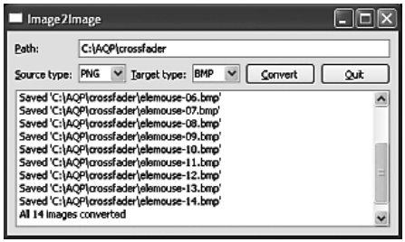
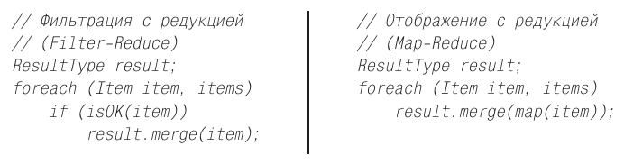
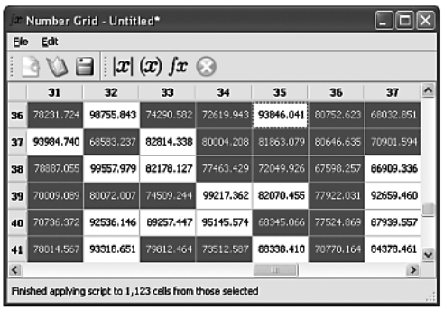
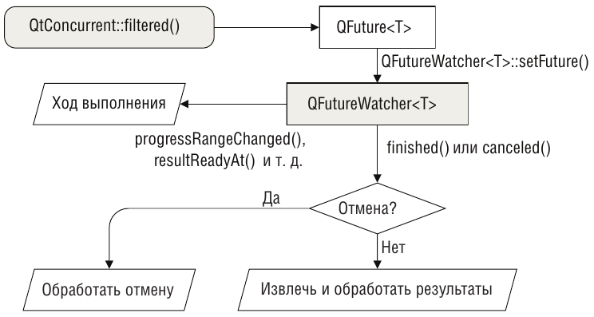

Многопоточное программирование
с модулем QtConcurrent
Внимание! Данные статьи писались в момент существования Qt4. Однако все описанные здесь механизмы многопоточности остались практически неизменными и в Qt5. Поэтому сведения из этих статей подходят как для библиотек Qt4, так и для Qt5.
Многопоточное программирование весьма популярно, а иногда и очень полезно. Однако многие программисты применяют его без достаточных оснований, а в результате приложения получаются избыточно сложными (см. врезку «Такая противоречивая многопоточность» чуть ниже). В этой статье предполагается знакомство с основами многопоточного программирования в Qt; наша задача здесь – показать, как следует использовать поддержку многопоточности, а не предложить учебное руководство по этой теме (можно обратиться к документации на странице qt.nokia.com/doc/threads.html или к главе «Многопоточная обработка» в книге «Qt 4: программирование GUI на C++»).
Прежде чем нырнуть в бурные многопоточные воды, стоит сделать паузу и поразмышлять о некоторых связанных с этим вопросах. Как правило, мы применяем многопоточность, чтобы повысить производительность, но при этом ко многим вещам приходится подходить иначе, чем при написании однопоточных приложений.
Вообще-то, нет никакой гарантии, что наличие нескольких потоков действительно повысит производительность. Например, если количество потоков превышает количество процессорных ядер, то производительность может даже уменьшиться, поскольку весь выигрыш съедается возросшей конкуренцией за ресурсы. А иногда алгоритм, оптимальный для однопоточного приложения, оказывается не самым эффективным для многопоточного. Поэтому, желая увериться в том, что мы действительно обеспечили наилучшую производительность, нужно написать разные реализации и профилировать их на предмет сравнения производительности – на той же аппаратуре и в той же конфигурации ПО, какие будут у потенциальных пользователей.
Такая противоречивая многопоточность
В основном благодаря встроенной поддержке многопоточности в Java, а с недавних пор также появлению на рынке многоядерных процессоров интерес к многопоточным программам в последние годы значительно вырос.
Но, несмотря на популярность, многопоточная обработка остается внутренне противоречивой. Она может существенно увеличить сложность программ и сильно затруднить отладку и сопровождение по сравнению с однопоточными приложениями. И не всегда возможно разбить алгоритм на части, так, чтобы оправдать использование многопоточности. Кроме того, достижению выигрыша в производительности иногда мешают сами издержки многопоточной обработки, да и вообще допустить ошибку при таком подходе гораздо проще.
Ведущий разработчик из компании Sun Тим Брей (Tim Bray) говорит: «После того как лучшие и ярчайшие умы потратили десять лет на создание и отладку инфраструктуры многопоточности в Java и .NET, начинает складываться впечатление, что эта идея оказалась порочной» (параграф «Processors» в блоге Тима Брея по адресу www. tbray.org/ongoing/When/200x/2008/04/24/Inflection). И его голос не одинок. Один из отцов-основателей науки о компьютерах, Дональд Кнут, пишет: «Я совершенно не удивлюсь, если вся идея многопоточной обработки окажется пшиком» (интервью с Дональдом Кнутом на странице www.informit.com/articles/article.aspx?p=1193856).
На поверхности лежат два основные проблемы. Одна заключается в том, что использование многопоточности требует написания значительного объема кода для поддержки самой технологии, не имеющего отношения к решению поставленной задачи. Что еще хуже, этот код может оказаться очень нетривиальным, правильно написать его трудно, а отлаживать и того труднее. Другая проблема состоит в том, что на аппаратном уровне существует много разных подходов к реализации параллелизма, в каждом случае авторы компиляторов должны применять различные приемы, а по мере развития все это может оказаться устаревшим из-за появления новых аппаратных решений.
Но есть и хорошие новости. Существует технология программной транзакционной памяти, которая позволяет осуществлять многопоточную обработку на высоком уровне, не обременяя программиста низкоуровневыми деталями (блокировкой и разблокировкой). Такие библиотеки уже разрабатываются для C++. И в Qt тоже есть модуль QtConcurrent (с ним мы ознакомимся в этой статье), предназначенный для организации высокоуровневого доступа к многопоточности и берущий на себя заботу обо всех низкоуровневых деталях. В числе других решений можно назвать языки Erlang и Go, а также технологию Grand Central Dispatch компании Apple.
И разумеется, существует принципиально иной подход, который позволяет воспользоваться наличием нескольких ядер без большинства недостатков, присущих многопоточности, но и без некоторых его достоинств. Это многопроцессорная обработка, которая, правда, страдает и от ряда собственных недостатков. Смысл ее заключается в передаче части работы отдельным процессам, например, с помощью класса QProcess. Хотя этот подход избавляет программиста от части неочевидных подводных камней и от написания дополнительного кода для поддержки многопоточности, ответственность за все межпроцессные коммуникации попрежнему лежит на нас.
Но оставим подводные камни. Если вы решили написать многопоточное приложение, то библиотека Qt готова предоставить вам всяческую поддержку. В частности, в версии Qt 4.4 появился класс QRunnable и пространство имен QtConcurrent, предлагающие высокоуровневый API для поддержки многопоточности, так что программисту не нужно вникать в детали низкоуровневого API класса QThread и связанных с ним классов. Этот высокоуровневый API освобождает нас от многих забот, обычно ассоциируемых с многопоточным программированием (хотя коекакие меры предосторожности принимать все же надо).
Класс QRunnable и функция QtConcurrent::run() прекрасно подходят в случае, когда нужно выполнить фоновую обработку в одном или нескольких вспомогательных потоках, не прибегая ко всему арсеналу гибких средств, предоставляемому классом QThread. Они будут рассмотрены в первом разделе этой статьи.
В пространстве имен QtConcurrent имеются также функции для фильтрации (filter), отображения (map) и редукции (reduce, свертка) – что это означает, мы объясним при рассмотрении этих функций во втором разделе. Они идеальны для ситуаций, когда необходимо обработать очень много элементов. К сожалению, мы не можем воспользоваться ими для обработки элементов модели QAbstractItemModel или сцены QGraphicsScene, потому что Qt не поддерживает блокировку моделей, сцен и содержащихся в них элементов. Однако мы покажем, как обойти эту проблему ценой дополнительной памяти и процессорного времени.
Иногда бывает разумно обратиться к низкоуровневому API. В следующей статье мы будем рассматривать работу с классом QThread. Потенциально это самый трудный способ организации нескольких потоков в Qt, но в награду вы получаете возможность предельно точного контроля. В этой и следующей статьях мы попытаемся свести к минимуму опасности и сложности многопоточной обработки. Основной способ достижения этой цели – попытаться вообще избежать блокировок – например, поручая каждому потоку независимую часть работы. Если же блокировка все-таки необходима, то мы стараемся минимизировать ее или сделать прозрачной – например, за счет создания классов, которые сами управляют инкапсулированными в них блокировками, не обременяя этим клиентов.
В Qt есть также несколько классов еще более низкого уровня, например QAtomicInt и QAtomicPointer. Они идеально подходят для создания потокобезопасных структур данных и прочих низкоуровневых компонентов, но выходят за рамки этой статьи. (Некоторые мысли о том, как ими пользоваться, можно почерпнуть в книге «The Art of Multiprocessor Programming»)
API многопоточной обработки в Qt включает также классы QSemaphore, QThreadStorage и QWaitCondition. Чаще всего они используются в сочетании с подклассами QThread, хотя в этой и в следующей статьях мы с ними не встретимся, потому что отдадим предпочтение другим классам и приемам, например типу volatile bool. (О применении классов QSemaphore, QThreadStorage и QWaitCondition см. главу «Многопоточная обработка» в книге «Qt 4: программирование GUI на C++»).
Ключевым словом volatile помечается переменная, которая может измениться незаметно для программы, и значит, компилятор ни в коем случае не должен устранять ее в результате оптимизации или кэшировать. Это полезно, когда переменная размещается по адресу памяти, который может модифицироваться вне программы, как, например, аппаратный порт. Но, кроме того, переменные типа volatile bool бывают весьма удобны в многопоточных программах в случае, когда значение переменной может быть изменено в одном потоке, а прочитано в другом. Важно отметить, что слово volatile не годится для многопоточной работы с другими типами данных (даже int), поскольку нельзя исключить возможность обновления двух разных байтов разными потоками. Но с типом bool его можно применять безопасно (см. статью Андрея Александреску «volatile—Multithreaded Programmer’s Best Friend» по адресу www.ddj.com/cpp/184403766).
Помимо конструкции volatile bool, далее будут приведены примеры использования классов QMutex, QMutexLocker, QReadWriteLock, QReadLocker и QWriteLocker, а из пространства имен QtConcurrent – функции QFuture и QFutureWatcher.
Вообще говоря, многопоточность дает максимальную отдачу, когда расходы на подготовку и запуск отдельных потоков перекрываются выигрышем от распределения работы между несколькими ядрами или процессорами. Если оставить в стороне очевидные применения в параллельных алгоритмах, то эффект от использования многопоточности особенно нагляден, когда имеется по крайней мере один (а потенциально и несколько) ресурсоемкий участок обработки, который может быть полностью или по большей части независимым.
Один важный случай применения многопоточности встречается в контексте графических интерфейсов. Если требуется выполнить какую-то длительную операцию, не «подвешивая» при этом пользовательский интерфейс, то можно создать дополнительный поток и поручить ему обработку. Для сетевых взаимодействий это необязательно, потому что Qt и так реализует доступ к сети асинхронно, но когда речь идет о реализации какой-то обработки собственными силами, наличие одного или нескольких вспомогательных потоков может оказаться весьма кстати. В некоторых случаях можно воспользоваться и менее накладным подходом – организацией локального цикла обработки событий (это решение есть в главе 2, книги «Qt Профессиональное программирование. Разработка кроссплатформенных приложений на С++» Марка Саммерфилда).
Выполнение функции в потоке
В случаях, когда количество подлежащих обработке элементов невелико, но обработка каждого занимает много времени, часто удобно делать это в одном отдельном потоке выполнения, чтобы сохранить работоспособное состояние пользовательского интерфейса. И наоборот, если требуется обработать очень много элементов, но их можно как-то сгруппировать (или поместить в очередь), то идея распределить работу между несколькими потоками выглядит весьма привлекательно.
Существует четыре основных способа распределить обработку между несколькими потоками или процессами:
В этом разделе будет рассмотрено использование QtConcurrent::run() и QRunnable, а в следующей статье – применение QThread.
Работать с функцией QtConcurrent::run() несложно: создаем функцию или метод, который будет заниматься обработкой, и передаем его в Qt Concurrent::run() для выполнения. Если желательно задействовать несколько вспомогательных потоков, то можно передавать одну и ту же функцию (обычно с разными аргументами) несколько раз. Использование класса QRunnable аналогично. Создаем его подкласс и помещаем всю свою обработку в реализацию чисто виртуального метода run(). Затем передаем методу QThreadPool::start() столько экземпляров этого подкласса, сколько нужно вспомогательных потоков.
У обработки во вспомогательных потоках с помощью QtConcurrent::run() или QRunnable есть два потенциальных недостатка по сравнению с использованием класса QThread. Во-первых, отсутствует поддержка сигналов и слотов, так что нет никакого встроенного механизма коммуникации (например, для индикации хода выполнения). Во-вторых, мы не получаем уведомления о завершении обработки; если это необходимо, приходится самим искать выход. Впрочем, решить обе проблемы – а заодно поддержать останов потока – совсем просто, как мы убедимся в конце этого раздела.
В этом разделе мы напишем приложение Image2Image (image2image), которое будет искать в указанном каталоге графические файлы и для каждого создавать копию изображения в указанном формате (например, bmp, tiff и т. д.). Внешний вид окна программы показан на следующем рисунке:

Приложение Image2Image
Для того чтобы конвертировать изображение, его нужно считать в память в исходном формате, а затем сохранить в другом – это сочетание дискового ввода/вывода и процессорной обработки. Мы решили использовать в приложении несколько вспомогательных потоков, каждому из которых будет передан свой список файлов для конвертирования. Поскольку у каждого вспомогательного потока имеется независимая часть работы, то коммуникация между ними не нужна, так что можно обойтись без блокировок. Разумеется, мы хотели бы уведомлять главный поток (интерфейс пользователя) программы о ходе работы, но для этого применим способ, который возлагает заботу о возможных блокировках на Qt.
Мы написали приложение так, чтобы в зависимости от некоторой константы препроцессора, определенной в директиве #define, оно могло использовать либо функцию QtConcurrent::run(), либо класс QRunnable. Использование QtConcurrent::run() мы рассмотрим в следующем подразделе, а сейчас посмотрим, как работать с QRunnable. В обоих подразделах объяснение кода, относящегося к пользовательскому интерфейсу, сведено к минимуму, все внимание уделяется вопросам многопоточной обработки.
Хотя в обоих случаях применяются одни и те же инфраструктура главного окна и средства управления отменой, техника извещения о ходе выполнения различна. В примере QtConcurrent::run() для этого отправляется пользовательское событие, а в примере QRunnable вызывается слот. Однако, поскольку QRunnable не является подклассом QObject, вызывать слот приходится без использования emit (то есть не посылая сигнал естественным для Qt способом). Мы просто хотели продемонстрировать два разных приема; в принципе, никто не мешает в обоих случаях использовать события или вызывать слоты.
Помимо методов и виджетов, в классе главного окна определены три закрытые переменные:
int total;
int done;
volatile bool stopped;
В переменной total хранится общее число подлежащих обработке изображений, в переменной done – количество уже конвертированных изображений, а в булевой переменной stopped – признак, используемый для того, чтобы уведомить вспомогательные потоки о том, что пользователь пожелал прервать выполнение. Отметим, что и для инициирования процесса конвертирования, и для его прерывания служит одна и та же кнопка (convertOrCancelButton).
Выбрав каталог, а также исходный и конечный формат, пользователь может начать конвертирование, нажав кнопку Convert. После нажатия эта кнопка заменяется на Cancel, и теперь ее нажатие прекращает конвертирование. Кнопка соединена со слотом convertOrCancel().
void MainWindow::convertOrCancel()
{
stopped = true;
if (QThreadPool::globalInstance()->activeThreadCount())
QThreadPool::globalInstance()->waitForDone();
if (convertOrCancelButton->text() == tr(“&Cancel”)) {
updateUi();
return;
}
QString sourceType = sourceTypeComboBox->currentText();
QStringList sourceFiles;
QDirIterator i(directoryEdit->text(), QDir::Files|QDir::Readable);
while (i.hasNext()) {
const QString &filenameAndPath = i.next();
if (i.fileInfo().suffix().toUpper() == sourceType)
sourceFiles << filenameAndPath;
}
if (sourceFiles.isEmpty())
AQP::warning(this, tr(“No Images Error”),
tr(“No matching files found”));
else {
logEdit->clear();
convertFiles(sourceFiles);
}
}
В начале слота переменной stopped присваивается значение true, чтобы уведомить все работающие вспомогательные потоки о необходимости остановиться. Затем проверяется, остались ли еще вспомогательные потоки в глобальной очереди потоков Qt, и если да, то слот ожидает (блокируя программу), пока все они не завершатся.
Метод QThreadPool::globalInstance() возвращает указатель на глобальный объект QThreadPool, а QThreadPool::activeThreadCount() – число активных потоков в пуле – оно, разумеется, может быть равно 0. Метод QThread Pool::waitForDone() ожидает завершения всех работающих потоков, взятых из пула, поэтому он может блокировать пользовательский интерфейс на длительное время. Чтобы избежать такого развития событий, мы должны сообщить всем потокам о необходимости прекратить работу, прежде чем приступить к ожиданию. В данной программе мы для этого просто устанавливаем для переменной stopped значение true.
Если пользователь отменяет выполнение, то мы вызываем метод updateUi() (не показан), чтобы изменить текст кнопки Cancel на Convert, и возвращаем управление, поскольку в этот момент все вспомогательные потоки уже остановлены.
Когда пользователь нажимает кнопку Convert, мы составляем список файлов в выбранном каталоге, суффикс которых соответствует выбранному исходному формату. Если список пуст, то мы сообщаем об этом пользователю и возвращаем управление. Если же список не пуст, то мы очищаем журнал (виджет QPlainTextEdit, сконфигурированный только для чтения) и вызываем метод convertFiles(), который и отвечает за конвертирование.
Мы включили две реализации метода convertFiles(): с использованием функции QtConcurrent::run() (показан в следующем подразделе) и с применением класса QRunnable (показан далее). В обоих случаях, помимо самого метода convertFiles(), приведены соответствующие инфраструктурные методы.
Функция QtConcurrent::run()
Функция QtConcurrent::run() принимает указатель на функцию и один или несколько необязательных аргументов, которые будут переданы ей при вызове, и выполняет эту функцию в отдельном потоке, взятом из глобального пула потоков Qt. Она имеет следующую сигнатуру:
QFuture<T> run(Function, ...)
Аргумент Function должен быть указателем на функцию (или функтором), которая возвращает объект типа T. Многоточием (...) обозначается список аргументов переменной длины (содержащий 0 или более аргументов). Если аргументы заданы, то они передаются функции Function при вызове, поэтому должны соответствовать сигнатуре Function.
А теперь вернемся к приложению image2image и посмотрим, как используется QtConcurrent::run() на практике.
void MainWindow::convertFiles(const QStringList &sourceFiles)
{
stopped = false;
updateUi();
total = sourceFiles.count();
done = 0;
const QVector<int> sizes = AQP::chunkSizes(sourceFiles.count(),
QThread::idealThreadCount());
int offset = 0;
foreach (const int chunkSize, sizes) {
QtConcurrent::run(convertImages, this, &stopped,
sourceFiles.mid(offset, chunkSize),
targetTypeComboBox->currentText());
offset += chunkSize;
}
checkIfDone();
}
Сначала мы устанавливаем для переменной stopped значение false, а затем вызываем метод updateUi() (не показан), который превращает кнопку Convert в Cancel, изменяя надпись на ней. Далее мы записываем в переменную total общее количество файлов в списке, а переменной done присваиваем значение 0, поскольку еще ни один файл не конвертирован.
Можно было бы написать функцию для конвертирования одного графического файла и вызывать QtConcurrent::run(), передавая имя функции и имя очередного обрабатываемого файла. При этом потенциально можно создать столько рабочих потоков, сколько есть файлов в списке. Для очень больших файлов такой подход, возможно, и имеет смысл, но когда файлов много, то затраты на создание и обслуживание такого большого количества потоков (особенно в Windows) вполне могут свести на нет весь выигрыш от распределения работы между несколькими потоками.
К счастью, метод QThread::idealThreadCount() возвращает оптимальное количество рабочих потоков для данного компьютера – принимая во внимание операционную систему и число процессоров и ядер. При наличии всего одного процессора и ядра он вернет 1, а если процессоров и ядер несколько, то большее значение. Маловероятно, что эта величина будет в точности равна количеству подлежащих обработке файлов, поэтому мы должны разделить всю работу на части так, чтобы каждому потоку (в предположении, что их несколько) досталось примерно равное число файлов. (Разумеется, разбиение работы исходя из числа файлов – не всегда оптимальное решение, например, если имеется список из двадцати файлов, причем первые десять очень велики, а последние десять совсем маленькие.)
Чтобы распределить работу между оптимальным количеством вспомогательных потоков, мы сначала вызываем функцию AQP::chunkSizes() (не показана, но включена в модуль aqp.{hpp,cpp} из в состава исходного кода, прилагаемого к книге «Qt Профессиональное программирование Разработка кроссплатформенных приложений на С++», Марк Саммерфилд) – она получает число элементов в контейнере (в данном случае число файлов) и количество нужных нам порций (в данном случае идеальное число вспомогательных потоков), а возвращает вектор, содержащий размеры порций, которые в сумме дают общее число элементов и распределены максимально равномерно.
Например, если в списке 97 элементов, а число порций равно 1 (один поток), то функция вернет вектор [97]; если число порций равно 2, то получим вектор [49, 48]; если 3 – то вектор [33, 32, 32], и т. д.
Получив вектор размеров, мы обходим его (количество итераций будет равно 1, если идеальное количество потоков равно 1, поскольку в этом случае есть всего один размер порции) и для каждого размера вызываем QtConcurrent::run(). При этом мы передаем пять аргументов – функцию convertImages() (она будет выполняться в потоке) и четыре аргумента, передаваемых ей при вызове, а именно: указатель на главное окно (this), необходимый для взаимодействия с ним, указатель на булевую volatile-переменную stopped, чтобы мы могли узнать о том, что пользователь отменил операцию, часть полного списка файлов и суффикс конечных файлов. Вызовы функции QtConcurrent::run() неблокирующие, и сразу после вызова функция convertImages() начинает работать в отдельном потоке, получив предназначенные ей аргументы (выше мы отмечали, что использование переменных типа volatile bool безопасно относительно потоков, но к другим типам аналогичная техника неприменима).
Метод QStringList::mid() (а точнее, QList<T>::mid()) принимает смещение offset и необязательный счетчик count и возвращает часть списка, содержащую count элементов, начиная с элемента с индексом offset, или все элементы, начиная с offset, если величина offset + count больше общего числа элементов в списке или аргумент count не задан.
Запустив все рабочие потоки, мы вызываем слот checkIfDone() (будет рассмотрен ниже), который проверяет, завершилась ли обработка. Функция QtConcurrent::run() возвращает объект QFuture<T>, который, если передать его объекту QFutureWatcher<T>, позволяет обнаружить факт завершения рабочего потока. О том, как работать с объектами QFuture<T>, мы узнаем в следующем разделе, а пока просто будем игнорировать значение, возвращенное QtConcurrent::run(), и опрашивать состояние – просто чтобы показать, что такая техника тоже возможна.
void convertImages(QObject *receiver,
volatile bool *stopped,
const QStringList &sourceFiles,
const QString &targetType)
{
foreach (const QString &source, sourceFiles) {
if (*stopped)
return;
QImage image(source);
QString target(source);
target.chop(QFileInfo(source).suffix().length());
target += targetType.toLower();
if (*stopped)
return;
bool saved = image.save(target);
QString message = saved
? QObject::tr(“Saved ‘%1’”)
.arg(QDir::toNativeSeparators(target))
: QObject::tr(“Failed to convert ‘%1’”)
.arg(QDir::toNativeSeparators(source));
QApplication::postEvent(receiver,
new ProgressEvent(saved,
message));
}
}
Эта функция выполняется в одном или нескольких рабочих потоках, каждый раз со своим собственным списком обрабатываемых файлов. Перед тем как начать дорогостоящую операцию (загрузку или сохранение графического файла), она проверяет, не потребовал ли пользователь прекратить работу, и если это так, то функция возвращает управление, и поток, в котором она выполнялась, становится неактивным.
Сама обработка несложна: для каждого файла в списке мы создаем объект типа QImage (конструктор считывает указанный графический файл), затем формируем имя конечного файла и сохраняем в нем изображение. Метод QImage::save() возвращает булевый флаг, индицирующий успех или неудачу.
Статический метод QDir::toNativeSeparators() принимает путь или путь и имя файла и возвращает строку, в которой каталоги разделены символом, возвращающим метод QDir::separator() (то есть символом \ в Windows и / в UNIX). В исходном коде обычно удобнее использовать символ /, потому что его не нужно экранировать в строках, а Qt понимает его на любой платформе. Но если мы хотим показывать пути пользователям, то лучше представлять их в виде, соответствующем той платформе, на которой работает приложение.
Мы хотим уведомлять пользователя о завершении обработки каждого файла. Проще всего это сделать, обратившись к слоту в вызывающем виджете, – этот прием мы рассмотрим в следующем подразделе. А здесь воспользуемся чуть менее удобным способом – отправим пользовательское событие, просто чтобы показать, как это делается.
Сначала мы создаем строку сообщения, а потом отправляем ее вместе с флагом успеха объекту-получателю (в данном случае главному окну), обернув в пользовательское событие. Метод QApplication::postEvent() принимает на себя владение событием, поэтому нам удалять событие не нужно.
На самом деле, для отправки событий есть два метода: QApplication:: sendEvent() и QApplication::postEvent().
Метод sendEvent() доставляет событие немедленно, но использовать его следует с осторожностью и только когда иначе никак нельзя. Например, в многопоточных программах событие, отправленное методом send Event(), обрабатывается в потоке отправителя, а не получателя. Кроме того, не выполняется сжатие и переупорядочение событий, например несколько событий рисования не упаковываются в одно. Наконец, метод sendEvent() не удаляет событие, поэтому на практике отправляемые с его помощью события создаются в стеке.
Метод postEvent() помещает событие – которое должно быть создано не в стеке, а в куче с помощью оператора new – в очередь событий получателя, так что оно обрабатывается в стандартном цикле обработки сообщений. Именно этот способ следует предпочесть при обычных обстоятельствах, потому что он хорошо согласован с принципами обработки событий в Qt.
В любом случае нас не должно беспокоить, что событие передается из одного потока в другой, – Qt знает, какие действия нужно выполнить.
struct ProgressEvent : public QEvent
{
enum {EventId = QEvent::User};
};
explicit ProgressEvent(bool saved_, const QString &message_)
: QEvent(static_cast<Type>(EventId)),
saved(saved_), message(message_) {}
const bool saved;
const QString message;
Это полное определение класса ProgressEvent. Каждому пользовательскому событию необходимо назначать уникальный идентификатор (QEvent::User, QEvent::User + 1 и т. д.) типа QEvent::Type, чтобы по ошибке система не приняла одно сообщение за другое. Мы объявили событие в виде struct и оставили булевый флаг saved и текст сообщения message открытыми членами.
bool MainWindow::event(QEvent *event)
{
if (!stopped && event->type() ==
static_cast<QEvent::Type>(ProgressEvent::EventId))
{
ProgressEvent *progressEvent =
static_cast<ProgressEvent*>(event);
Q_ASSERT(progressEvent);
logEdit->appendPlainText(progressEvent->message);
if (progressEvent->saved)
++done;
return true;
}
return QMainWindow::event(event);
}
Если мы хотим распознавать и обрабатывать пользовательские события в некотором виджете, то должны переопределить в нем метод QWidget:: event(). В данном случае если обработка продолжается (то есть не была отменена) и мы получаем событие ProgressEvent, то добавляем текст хранящегося в нем сообщения в журнал QPlainTextEdit и, если сохранение прошло успешно, увеличиваем счетчик обработанных файлов. Кроме того, мы возвращаем true, давая понять, что обработали событие и Qt может его удалить, не утруждаясь поисками других обработчиков для него. Обработку же всех остальных событий, а также и этого в случае, если оно получено уже после остановки конвертирования, мы поручаем обработчику событий из базового класса.
const int PollTimeout = 100;
void MainWindow::checkIfDone()
{
if (QThreadPool::globalInstance()->activeThreadCount())
QTimer::singleShot(PollTimeout, this, SLOT(checkIfDone()));
else {
QString message;
if (done == total)
message = tr(“All %n image(s) converted”, “”, done);
else
message = tr(“Converted %n/%1 image(s)”, “”, done)
.arg(total);
logEdit->appendPlainText(message);
stopped = true;
updateUi();
}
}
Этот слот вызывается в конце метода convertFiles() для опроса состояния. (Использование метода QObject::tr() обсуждается ниже во врезке «Использование tr() с тремя аргументами») Можно было бы снова применить пользовательское событие или сгенерировать сигнал, извещающий о завершении метода convertImages(), но нам все равно пришлось бы проверять, все ли активные потоки завершились, поэтому никакого выигрыша по сравнению с опросом мы не получили бы. Альтернативный подход – воспользоваться объектами QFuture<T>, которые возвращают вызовы QtConcurrent::run(), и объектами QFutureWatcher<T>, извещающими о завершении рабочих потоков, – как это делается, мы увидим во втором разделе данной статьи.
Сначала мы смотрим, есть ли хотя бы один активный вспомогательный поток. Если да, то создаем однократный таймер, который вызовет этот же слот через 100 мс. Если же все потоки уже завершились, то мы дописываем в журнал финальное сообщение, восстанавливаем исходное значение переменной stopped (которая и так уже равна true, если конвертирование было прервано пользователем) и обновляем пользовательский интерфейс (то есть изменяем кнопку с Cancel на Convert ).
void MainWindow::closeEvent(QCloseEvent *event)
{
stopped = true;
if (QThreadPool::globalInstance()->activeThreadCount())
QThreadPool::globalInstance()->waitForDone();
event->accept();
}
Чтобы корректно выйти из многопоточной программы, рекомендуется сначала остановить все потоки, а только потом завершить саму программу. Мы реализовали эту идею, переопределив метод closeEvent(), в котором проверяем, что все активные потоки завершились.
Класс QRunnable
Альтернативой функции QtConcurrent::run() является создание подкласса QRunnable и выполнение его в потоке, взятом из глобального пула. Ниже мы рассмотрим этот подход, продемонстрировав другую реализацию метода convertFiles(), а также всех вспомогательных методов.
void MainWindow::convertFiles(const QStringList &sourceFiles)
{
stopped = false;
updateUi();
total = sourceFiles.count();
done = 0;
const QVector<int> sizes = AQP::chunkSizes(sourceFiles.count(),
QThread::idealThreadCount());
int offset = 0;
foreach (const int chunkSize, sizes) {
ConvertImageTask *convertImageTask = new ConvertImageTask(
this,
&stopped,
sourceFiles.mid(offset, chunkSize),
targetTypeComboBox->currentText());
QThreadPool::globalInstance()->start(convertImageTask);
offset += chunkSize;
}
checkIfDone();
}
Этот вариант метода convertFiles() по структуре мало чем отличается от рассмотренного выше. Основное различие состоит в том, что для обработки каждой порции файлов мы создаем объект класса ConvertImageTask (подкласса QRunnable) и передаем конструктору объекта точно те же самые аргументы, что и методу QtConcurrent::run(), предназначая их для последующей передачи функции convertImages(). Создав объект, мы вызываем его метод QThreadPool::start() – в результате владение объектом передается глобальному пулу потоков Qt и начинается его выполнение.
Пул потоков удалит объект QRunnable, когда его выполнение закончится, а именно это нам сейчас и нужно. Но можно было бы отменить такое поведение, вызвав метод QRunnable::setAutoDelete(false), и в таком случае ответственность за удаление легла бы на нас.
class ConvertImageTask : public QRunnable
{
public:
explicit ConvertImageTask(QObject *receiver,
volatile bool *stopped,
const QStringList &sourceFiles,
const QString &targetType)
: m_receiver(receiver), m_stopped(stopped),
m_sourceFiles(sourceFiles),
m_targetType(targetType.toLower())
{}
private:
void run();
...
}
Это определение класса ConvertImageTask, в котором мы опустили лишь закрытые данные-члены. Сделав метод run() закрытым, мы запретили не только наследовать этому классу, но также и вызывать этот метод у созданных экземпляров (он должен вызываться только из QThread Pool::start()).
void ConvertImageTask::run()
{
foreach (const QString &source, m_sourceFiles) {
if (*m_stopped)
return;
QImage image(source);
QString target(source);
target.chop(QFileInfo(source).suffix().length());
target += m_targetType;
if (*m_stopped)
return;
bool saved = image.save(target);
QString message = saved
? QObject::tr(“Saved ‘%1’”)
.arg(QDir::toNativeSeparators(target))
: QObject::tr(“Failed to convert ‘%1’”)
.arg(QDir::toNativeSeparators(source));
QMetaObject::invokeMethod(m_receiver,
“announceProgress”,
Qt::QueuedConnection,
Q_ARG(bool, saved),
Q_ARG(QString, message));
}
}
Структурно этот метод идентичен методу convertImages(), который мы видели раньше. Единственное различие в том, что взаимодействие с главным окном осуществляется не с помощью пользовательского события, а путем вызова слота MainWindow::announceProgress().
Поскольку класс QRunnable не является подклассом QObject, в него не встроена поддержка сигналов и слотов. Можно было бы, конечно, унаследовать наш класс одновременно от QObject и QRunnable, но тогда уж лучше просто создать подкласс QThread, так как он наследует QObject и уже имеет несколько полезных встроенных сигналов и слотов. Другое решение – обратиться к пользовательским событиям, как мы поступили в предыдущем подразделе.
Но здесь мы решили просто вызвать слот напрямую, воспользовавшись методом QMetaObject::invokeMethod(). Ему передается объект-получатель, имя вызываемого слота, тип соединения (Qt::QueuedConnection подходит лучше всего, потому что соединения такого типа реализуются с помощью очереди сообщений, как и метод QApplication::postEvent()) и передаваемые слоту аргументы. Каждый аргумент следует задавать с помощью макроса Q_ARG, который принимает тип и значение. В методе QMetaObject::invokeMethod() можно передать до девяти аргументов и, кроме того, разрешается указать возвращаемое значение (при помощи макроса Q_RETURN_ARG), однако последнее имеет смысл, только если задан тип соединения Qt::DirectConnection.
Поскольку запрос на вызов слота помещается в главную очередь сообщений (пользовательского интерфейса), то исполняется он в потоке GUI, а не в рабочем потоке, который обратился к QMetaObject::invokeMethod(). Это справедливо также для сигналов, генерируемых из рабочего потока, поскольку «за кулисами» Qt преобразует сигналы из потоков в события.
Некоторые программисты считают, что использование метода QMeta Object::invokeMethod() лучше отправки пользовательского события, потому что он бесшовно интегрируется с механизмом сигналов и слотов Qt и не требует ни создания подкласса QEvent, ни переопределения метода QWidget::event() в виджетах-получателях события. На внутреннем уровне сигналы и слоты, пересекающие границы потоков, все равно реализуются с помощью событий, но при использовании QMetaObject::invokeMethod() нам это совершенно не интересно, мы можем радоваться удобству вызова методов, не создавая какие-то там пользовательские события.
void MainWindow::announceProgress(bool saved, const QString &message)
{
if (stopped)
return;
logEdit->appendPlainText(message);
if (saved)
++done;
}
Этот метод добавляет переданное сообщение в конец журнала и увеличивает количество обработанных файлов, если сохранение завершилось успешно. Или ничего не делает, если обработка остановлена.
Вся прочая инфраструктура, необходимая для поддержки решения на основе подкласса ConvertImageTask класса QRunnable, точно такая же, как и для функции QtConcurrent::run(): опрос для выяснения того, закончилась ли обработка, выполняется в слоте checkIfDone() (см. выше), а проверка завершения потоков при выходе из приложения – в переопределенном методе closeEvent() (код так же был показан ранее по тексту).
Хотя для извещения главной программы о ходе выполнения мы использовали события в версии с QtConcurrent::run() и вызов слота в версии с подклассом QRunnable, вполне можно было бы в обоих случаях использовать один и тот же механизм: как события, так и вызов слота. Вообще говоря, вызов слота лучше, потому что более удобен и требует меньше кода. В решении на основе QRunnable отслеживать ход выполнения можно с помощью опроса, как мы и поступили, а в решении на основе QtConcurrent::run() можно использовать как опрос, так и объект класса QFutureWatcher<T> (классы QFuture<T> и QFutureWatcher<T> рассматриваются в следующем разделе).
Основное различие между QtConcurrent::run() и QRunnable заключается в том, что функция QtConcurrent::run() возвращает объект QFuture<T>, а это позволяет отслеживать ход обработки (и управлять им). Эту тему мы будем рассматривать в следующем разделе. Напротив, при использовании QRunnable мы должны сами реализовывать механизм отслеживания и управления выполнением.
Использование QtConcurrent::run() или QRunnable особенно полезно при большом объеме обработки во вспомогательных потоках, например для обработки крупных объектов или большого числа элементов порциями, как в данном случае. Иногда, впрочем, приходится обрабатывать много элементов, но не существует удобного способа разбить их на порции. Для таких ситуаций в модуле QtConcurrent есть и другие функции, с которыми мы ознакомимся в следующем разделе.
Фильтрация и отображение в потоках
Функции из пространства имен QtConcurrent идеально подходят для ситуаций, когда имеется много элементов данных, требующих едино образной обработки. Если количество элементов невелико (скажем, не более пяти на одно ядро), то можно написать функцию для обработки каждого и запускать ее через QtConcurrent::run(), QRunnable или QThread. Однако если элементов действительно много – порядка сотен или даже тысяч, – то создавать поток для каждого элемента было бы чересчур накладно; последовательная обработка окажется гораздо быстрее. В предыдущем разделе мы видели, что один из способов решить эту проблему – создать небольшое количество потоков и поручить каждому обработку группы элементов. Но иногда нам действительно нужно обрабатывать каждый элемент индивидуально, и в модуле QtConcurrent имеются для этого функции.
Модуль QtConcurrent содержит функции четырех видов: фильтры, отображатели, редукторы (о них мы будем говорить в этом разделе) и функцию run, обсуждавшуюся в предыдущем разделе. Принцип работы с фильтрами, отображателями и редукторами прост: вы подаете им на вход набор элементов для обработки и поручаете Qt заботу о распределении работы между потоками из своего глобального пула.
Концепции фильтрации и отображения заимствованы из функционального программирования. В этом контексте фильтром называется функция высшего порядка (то есть функция, принимающая другую функцию в качестве одного из аргументов), на вход которой подается некая последовательность, а на выходе получается новая последовательность, состоящая из элементов, для которых функция фильтрации вернула true. А отображатель – это функция, принимающая последовательность и функцию отображения и возвращающая новую последовательность, элементы которой получены применением функции отображения к соответствующему элементу входной последовательности.
Фильтры и отображатели в модуле QtConcurrent устроены очень похоже. Так, фильтр принимает последовательность элементов и функцию фильтрации и порождает новую последовательность, содержащую только те элементы, для которых функция фильтрации возвращает true. Это означает, что результирующая последовательность может вообще не содержать элементов, содержать только часть исходных элементов или все исходные элементы. Концептуально фильтр работает следующим образом:
QList<Item> filter(QList<Item> items, FilterFunction isOK)
{
QList<Item> results;
foreach (Item item, items)
if (isOK(item))
results << item;
return results;
}
Здесь мы использовали QList, но для хранения подлежащих фильтрации данных и конечного результата подойдет любой последовательный контейнер или его часть, заданная с помощью итераторов, указывающих на начало и конец.
Отображатели (не путать с контейнерным классом QMap!) принимают последовательность элементов и функцию отображения и порождают новую последовательность, содержащую столько же элементов, сколько исходная (хотя, возможно, других типов), причем каждый новый элемент получается из соответствующего исходного путем применения функции отображения. Концептуально отображатель работает следующим образом:
QList<Type2> mapper(QList<Type1> items, MapFunction map)
{
QList<Type2> results;
foreach (Type1 item, items)
results << map(item);
return results;
}
Здесь типы Type1 и Type2 могут совпадать или различаться – важно лишь, что функция отображения принимает элемент типа Type1 и возвращает элемент типа Type2.
Редуктор принимает последовательность элементов и редуцирует его, сводя к одному элементу. Например, можно вычислить сумму или среднее значение последовательности элементов. В пространстве имен QtConcurrent имеются функции, которые объединяют фильтрацию с редукцией и отображение с редукцией. Концептуально они работают следующим образом:

Фильтрация с редукцией (Filter-Reduce) в сравнении с
отображением с редукцией (Map-Reduce)
Здесь в качестве функции фильтрации взята isOK(), а в качестве функции отображения – map. Метод merge() результирующего объекта принимает на входе прошедший фильтрацию (или, в случае отображения с редукцией, обработку) элемент и каким-то образом инкорпорирует его. Например:
struct ResultType
{
ResultType() :
sum(0)
{}
void merge(int item)
{
sum += item;
}
int sum;
};
Если этот тип ResultType применить к последовательности чисел, то после отображения с редукцией (в предположении, что отображение осуществляется тождественной функцией int identity(int x) { return x; }) в result.sum окажется сумма чисел.
Разумеется, у функций из модуля QtConcurrent есть существенное отличие от показанных выше простых циклов, и заключается оно в том, что обработка осуществляется не последовательно, а в одном или нескольких потоках, так что все множество элементов обрабатывается параллельно. Надо отчетливо понимать, что для несложной обработки дополнительные издержки, скорее всего, окажутся неоправданными, однако, если обработка потребляет много ресурсов, то применение функций из модуля QtConcurrent может повысить производительность.
В пространстве имен QtConcurrent есть как блокирующие, так и неблокирующие (потоковые) варианты функций фильтрации, отображения и редукции. Блокирующие варианты предназначены для использования в уже запущенных вспомогательных потоках (например, в подклассах QRunnable или QThread) или там, где нам нужно всего лишь поведение данной функции, а блокирует она выполнение программы или нет, неважно. В этой статье мы будем рассматривать только неблокирующие варианты.
Во время работы над этой статьей в документации по Qt было сказано, что при использовании функций из пространства имен QtConcurrent никакой блокировки не требуется. Это верно, когда речь идет об обработке независимых данных, которая больше ни на что не влияет. Однако обрабатывать таким образом элементы модели или графической сцены невозможно, потому что Qt не предоставляет средств для блокировки моделей, сцен или содержащихся в них элементов. Проблему нетрудно решить, создав собственные суррогатные элементы, которые можно обработать параллельно, а затем последовательно обновить модель или сцену – при условии, конечно, что издержки не перевешивают выигрыш от распараллеливания обработки элементов.
В этом разделе мы рассмотрим приложение Number Grid (numbergrid).

Приложение Number Grid
Оно рисует матрицу чисел, как показано на рисунке выше. Мы можем сгенерировать начальный набор предопределенных или случайных чисел и динамически заполнить или изменить матрицу, выполнив написанный нами JavaScript-сценарий. (Наш конкретный сценарий будет вызываться один раз для каждой ячейки и помещать в нее предопределенные значения.)
Мы решили производить всю обработку во вспомогательных рабочих потоках. Для этого, прежде чем приступать к обработке, мы должны последовательно создать суррогатный элемент для каждого обрабатываемого элемента модели, передать суррогатные элементы функции из модуля QtConcurrent для параллельной обработки и по ее завершении последовательно перебрать результирующие суррогатные элементы, обновляя по ходу дела элементы модели. Использование независимых суррогатных элементов позволяет обойтись без блокирования модели, представления или элементов модели (что в любом случае невозможно).
Что касается применения пользовательского JavaScript-сценария к элементам, то, хотя основные шаги те же самые, нам еще необходимо отслеживать число возникших ошибок и (уникальные) сообщения об ошибках. Следовательно, все рабочие потоки должны будут обновлять счетчик ошибок и набор сообщений об ошибках, поэтому придется прибегнуть к блокировке. Однако мы вынесем все детали блокировки в небольшой класс, так что клиентский код сможет обращаться к счетчику и сообщениям, не захватывая блокировку явно.
В приложении Number Grid используются функции из пространства имен QtConcurrent для фильтрации, фильтрации с редукцией и отображения. Точнее, фильтрация нужна для выделения всех ячеек матрицы, удовлетворяющих определенному критерию, фильтрация с редукцией – для подсчета числа ячеек, удовлетворяющих критерию, а отображение – для применения JavaScript-сценария к каждой ячейке (или каждой выделенной ячейке) матрицы.
Применение функций из пространства имен QtConcurrent для подсчета и выделения ячеек в приложении Number Grid, пожалуй, медленнее, чем подсчет и выделение напрямую, поскольку это очень дешевые операции. Поэтому данный пример следует рассматривать лишь как иллюстрацию работы с функциями фильтрации и фильтрации с редукцией. Однако отображение, сводящееся в данном случае к параллельному применению сценария ко всем или только к выделенным ячейкам, возможно, будет работать быстрее, чем если бы мы применяли сценарий последовательно к каждой ячейке. Потенциальное ускорение тем более вероятно, чем выше затраты на обработку каждой ячейки и чем больше ячеек предстоит обработать. Объясняется это тем, что стоимость начального конфигурирования и запуска потоков может быть покрыта за счет распараллеливания обработки двух и более ячеек.
Приложение Number Grid представляет собой традиционную для C++/ Qt программу с главным окном. В нем есть меню File (Файл) с пунктами New (Создать), Open... (Открыть...), Save (Сохранить), Save as... (Сохранить как...) и Quit (Выход). Они вполне стандартны, поэтому рассматривать их мы не будем.
В меню Edit (Правка) есть пункты Count... (Подсчитать...), Select... (Выделить...), Apply Script (Применить сценарий) и Stop (Остановить), в каждом из которых используются функции из пространства имен QtConcurrent. При выборе операции подсчета или выделения открывается диалоговое окно, в котором можно задать критерий отбора. Для подсчета следует задать оператор числового сравнения (<, <=, =>, > и ~= – приблизительно равно), числовую величину и признак – подсчитывать все ячейки, удовлетворяющие критерию, или только выделенные. Для выделения пользователь задает оператор числового сравнения и числовую величину, заданный критерий применяется ко всем ячейкам. Когда пользователь выбирает пункт Apply Script, открывается диалоговое окно, в котором можно ввести произвольный JavaScript-сценарий с уже предопределенными глобальными переменными cellValue, cellRow и cellColumn. Далее можно указать, применяется ли сценарий ко всем ячейкам или только к выделенным.
Для выполнения описанных выше действий вызываются слоты editCount(), editSelect() и editApplyScript(). Мы рассмотрим их поочередно наряду с необходимыми им классами, методами и функциями, чтобы составить полное представление об использовании функций из модуля QtConcurrent. Хотя данные, обрабатываемые этими функциями, по идее, должны быть независимы, в одном случае мы все же используем объект QMutex, защищающий разделяемые данные. Прежде чем заняться самими слотами, приведем объявления некоторых закрытых переменных из заголовочного файла класса главного окна:
QStandardItemModel *model;
QFutureWatcher<SurrogateItem> selectWatcher;
QFutureWatcher<Results> countWatcher;
QFutureWatcher<SurrogateItem> applyScriptWatcher;
MatchCriteria countCriteria;
bool applyToAll;
mutable bool cacheIsDirty;
QString script;
ThreadSafeErrorInfo errorInfo;
Мы предполагаем, что читатель знаком с классом QStandardItemModel, который используется как табличная модель для хранения чисел, представленных подклассом QStandardItem, где они хранятся в виде элементов типа double в роли Qt::EditRole.
Ниже мы увидим, что неблокирующая функция при вызове из модуля QtConcurrent немедленно возвращает объект типа QFuture<T>, который представляет будущий результат вычисления. Но сразу после возврата из функции этот объект обычно бесполезен, потому что вычисление только началось. Если обратиться к объекту QFuture<T>, то доступ будет блокирован до завершения вычисления, а это нам, как правило, не нужно. Как только вычисление завершится, в объекте QFuture<T> окажется полученный результат – один в случае редукции или несколько при применении фильтрации и отображения.
Обычно при использовании неблокирующих функций из пространства имен QtConcurrent возвращенный объект QFuture<T> передается объектунаблюдателю QFutureWatcher<T>. Наблюдатель следит за ходом выполнения функции и генерирует сигналы, извещающие о том, какой результат (или результаты – в случае операций фильтрации или отображения, порождающих последовательность результатов) получен, а также о завершении (либо приостановке, возобновлении, отмене) вычисления. «Наблюдатели будущего» предоставляют также API, позволяющий управлять поведением функции, например методы pause(), resume() и cancel().
Отметим, что хотя фильтрация и отображение порождают последовательности результатов, тип T, параметризующий шаблонный класс QFuture<T>, всегда представляет собой тип одного результата, а тип T в классе QFutureWatcher<T> должен совпадать с типом наблюдаемого будущего (то есть класса QFuture<T>. Это не распространяется на QFutureWatcher<void>, который может наблюдать за QFuture<T>, параметризованным любым типом, однако предоставляет для него только информацию о состоянии. – Прим. науч. ред.)
В данном случае мы имеем по одному наблюдателю будущего для каждой поддерживаемой приложением операции из модуля QtConcurrent. Для выделения ячеек и применения к ним сценария предназначен класс QFutureWatcher<SurrogateItem> – напомним, что мы не можем параллельно обрабатывать элементы модели, поскольку нет средств для блокировки модели или ее элементов, поэтому приходится использовать суррогаты. Для подсчета используется класс QFutureWatcher<Results>; Results, как мы увидим позже, – это простая структура struct, в которой хранится счетчик и общее количество.
И для подсчета, и для выделения пользователь может задать критерий отбора. Ниже приведено определение структуры MatchCriteria и используемого в ней перечисления:
enum ComparisonType {
LessThan,
LessThanOrEqual,
GreaterThan,
GreaterThanOrEqual,
ApproximatelyEqual};
struct MatchCriteria
{
ComparisonType comparisonType;
double value;
bool applyToAll;
};
В закрытой секции класса главного окна объявлена переменная countCriteria типа MatchCriteria, в которой хранится критерий, применяемый при подсчете. Критерии для выделения и применения сценария хранятся внутри объектов SurrogateItem, как мы увидим ниже. При выделении булевый флаг applyToAll игнорируется.
Имеется также закрытая булевая переменная MainWindow::applyToAll; если она равна true, то подсчет или применение сценария распространяется на все ячейки матрицы, иначе только на выделенные.
В булевой переменной cacheIsDirty хранится признак, показывающий, были ли изменены данные в матрице. Поскольку для нее задан модификатор mutable, то эту переменную можно изменять в константных методах.
В строке script хранится текст JavaScript-сценария, который будет выполняться для каждой ячейки (или для каждой выделенной ячейки), когда пользователь выберет пункт Apply Script. Во время выполнения сценария может произойти ошибка. Но мы не хотим всякий раз при возникновении ошибки открывать окно предупреждения, поскольку обрабатываться могут сотни, а то и тысячи ячеек, и ошибка может произойти в каждой. Поэтому мы просто подсчитываем общее число ошибок и ведем список уникальных сообщений об ошибках. Поскольку счетчик и сообщения могут обновляться в любом потоке, выполняющем функции из модуля QtConcurrent, то необходим какой-то механизм блокировки для сериализации доступа, который гарантирует, что обновлять счетчик и список сообщений в каждый момент разрешено только одному потоку.
Один из способов сериализовать доступ к информации об ошибках – создать три переменных, скажем, int errorCount, QStringList errorMessages и QMutex errorMutex. Когда понадобится получить доступ к информации об ошибках, мы должны захватить мьютекс. Но при таком подходе забота обо всех служебных деталях лежит на нас. Мы решили поступить по-другому – создать класс ThreadSafeErrorInfo, который содержит методы для чтения и обновления информации об ошибках и сам осуществляет синхронизацию доступа. Это означает, что пользователи объектов данного класса могут не беспокоиться о блокировке – все будет сделано автоматически. Ниже приведен фрагмент объявления класса ThreadSafeErrorInfo:
class ThreadSafeErrorInfo
{
public:
explicit ThreadSafeErrorInfo() : m_count(0) {}
···
private:
mutable QMutex mutex;
int m_count;
QSet<QString> m_errors;
};
По существу, это довольно простая структура, содержащая два интересующих нас элемента данных плюс мьютекс. Мы рассмотрим несколько ее методов, чтобы понять, как используется мьютекс.
QStringList errors() const
{
QMutexLocker locker(&mutex);
return QStringList::fromSet(m_errors);
}
Конструктор класса QMutexLocker принимает указатель на мьютекс и блокирует программу, пока не сможет захватить этот мьютекс. При выходе объекта из области видимости мьютекс освобождается. Статический метод QList<T>::fromSet() порождает список из множества.
В классе ThreadSafeErrorInfo есть также метод count(), который возвращает количество имевших место сообщений об ошибках (включая дубликаты), и метод isEmpty(), возвращающий true, если счетчик ошибок равен 0. Оба эти метода структурированы точно так же, как метод errors() (и потому не показаны).
void add(const QString &error)
{
QMutexLocker locker(&mutex);
++m_count;
m_errors << error;
}
Этот метод увеличивает счетчик сообщений и добавляет новое сообщение в множество. Поскольку сообщения хранятся в объекте QSet, то при попытке добавить дубликат сообщение просто игнорируется.
Альтернативное решение – хранить сообщения в списке QStringList, а внутри метода errors() копировать список, вызывать для копии метод QStringList::removeDuplicates() и возвращать результат. Но это означает, что вместо единственного экземпляра в множестве m_errors в памяти могут оказаться тысячи, а то и десятки тысяч повторяющихся сообщений.
void clear()
{
QMutexLocker locker(&mutex);
m_count = 0;
m_errors.clear();
}
Этот метод очищает данные, например, перед вызовом новой функции из модуля QtConcurrent.
QMutex прекрасно работает в классе ThreadSafeErrorInfo, но оптимален ли он в данной ситуации? Мьютекс запрещает любой доступ к защищаемому объекту, в том числе для чтения. В классе ThreadSafeErrorInfo есть ряд методов, которые только читают внутренние данные, а также методы, обновляющие данные. В принципе, мы могли бы разрешить нескольким потокам одновременно читать данные, так как это не создаст никаких проблем.
Чтобы разграничить доступ для чтения и записи, необходимо заменить QMutex классом QReadWriteLock. Тогда в методах чтения (count(), errors() и isEmpty()) мы могли бы использовать объект QReadLocker, а в методах записи (add() и clear()) – объект QWriteLocker. Пример работы с классом QReadWriteLock мы увидим позже. В данном приложении при наличии только одного рабочего потока (например, на машине с одним процессорным ядром) между применением QMutex и QReadWriteLock не будет особых различий, но в остальных случаях использование QReadWriteLock должно повысить производительность – по крайней мере, теоретически.
Класс, обладающий собственным внутренним механизмом синхронизации (типа ThreadSafeErrorInfo или ThreadSafeHash, с которым мы ознакомимся позже), называется монитором. Во избежание взаимоблокировок метод монитора, чей код находится в области видимости его внутренней блокировки, не должен вызывать другие методы, пытающиеся захватить эту блокировку. И разумеется, любая блокировка, захваченная в каком-то методе монитора, должна освобождаться перед возвратом из этого метода – этому условию легко удовлетворить с помощью применения объектов QMutexLocker (или QReadLocker, или QWriteLocker).
Более подробно с созданием мониторов можно ознакомиться в состоящей из двух частей статье в журнале Qt Quarterly «Monitors and Wait Conditions in Qt» по адресу qt.nokia.com/doc/qq/qq21-monitors.html.
Теперь, ознакомившись с закрытыми данными-членами, обратимся к общему порядку работы с функциями из модуля QtConcurrent. Вначале мы вызываем какую-либо функцию (filtered(), mapped(), filteredReduced() или mappedReduced()) и сохраняем возвращенный ей объект QFuture<T> в переменной. Затем вызывается метод QFutureWatcher<T>::setFuture(), которому передается QFuture<T>. Мы можем следить за ходом выполнения, подключившись к сигналам наблюдателя будущего, но в любом случае необходимо установить соединение с сигналом finished(), чтобы знать, когда обработка завершилась и можно обращаться к результатам. Этот паттерн показан на следующем рисунке.

Использование объекта QFutureWatcher
Все три наблюдателя будущего, которые используются в приложении Number Grid, хранятся закрытых переменных-членах, и для каждого создается два соединения сигнала со слотом.
connect(editStopAction, SIGNAL(triggered()),
&selectWatcher, SLOT(cancel()));
connect(&selectWatcher, SIGNAL(finished()),
this, SLOT(finishedSelecting()));
Здесь приведены исходные соединения для объекта selectWatcher; для объектов countWatcher и applyScriptWatcher все то же самое, только сигнал finished() соединен соответственно со слотами finishedCounting() и finishedApplyingScript().
Чтобы при желании можно было прервать длительную операцию, в пользовательском интерфейсе имеется пункт меню Stop ( Стоп ) и соответствующая кнопка на панели инструментов. Для реализации этой возможности мы соединяем действие stop со слотом cancel() наблюдателя будущего. При любом – нормальном или в результате отмены – завершении вычисления генерируется сигнал finished().
Ниже мы увидим, что в момент, когда наблюдателю будущего передается наблюдаемый объект, устанавливается дополнительное соединение, позволяющее пользователю следить за ходом выполнения с помощью индикатора, который появляется в строке состояния.
В следующем подразделе мы покажем, как с помощью функций из модуля QtConcurrent можно осуществлять фильтрацию, отображение и редукцию.
Использование QtConcurrent для фильтрации
Один из способов обработать все элементы модели, удовлетворяющие некоторому критерию, который задан программно или самим пользователем, – воспользоваться функцией из модуля QtConcurrent. В этом модуле имеется несколько функций фильтрации, но нас будет интересовать только QtConcurrent::filtered(), имеющая такие сигнатуры:
QFuture<T> filtered(Sequence, FilterFunction)
QFuture<T> filtered(ConstIterator, ConstIterator, FilterFunction)
Здесь Sequence – итерируемый контейнер элементов, например QList<T> или QVector<T>. Объекты типа ConstIterator – это итераторы, указывающие на начало и конец участка последовательности. Объект-функция FilterFunction служит для отбора элементов, включаемых в результат. Он должен иметь следующую сигнатуру:
bool filterFunction(const T&)
Тип T должен совпадать с типом элементов, хранящихся в контейнере Sequence (и с типом, используемым в QFuture<T>). Эта функция должна возвращать true для элементов, которые следует поместить в результирующий набор, и false – для тех, что нужно отфильтровать.
Поскольку мы не можем применять функции из модуля QtConcurrent непосредственно к элементам модели, то должны прибегнуть к описанной выше трехшаговой процедуре: сначала создать последовательность суррогатных элементов, соответствующих элементам модели, затем применить к ней функцию фильтрации, передав ей критерий отбора, – при этом порождается новая последовательность суррогатных элементов, удовлетворяющих критерию, – и наконец обойти эту последовательность и для каждого находящегося в ней элемента обновить соответствующий ему элемент модели.
В приложении Number Grid мы применяем фильтрацию для выделения элементов модели, удовлетворяющих заданному пользователем критерию, – например, всех ячеек матрицы, значение в которых меньше 3250. Для этого нам понадобятся суррогатные элементы; ниже приведено полное определение класса SurrogateItem:
struct SurrogateItem
{
explicit SurrogateItem(int row_=0, int column_=0,
double value_=0.0)
: row(row_), column(column_), value(value_)
{}
int row;
int column;
double value;
};
Несмотря на свою тривиальность, этот класс очень важен. Посмотрим, как описанные выше три шага реализуются на практике, и начнем со слота editSelect(), который вызывается, когда пользователь выбирает пункт Select... (Выделить...).
void MainWindow::editSelect()
{
MatchForm matchForm(MatchForm::Select, this);
if (matchForm.exec()) {
MatchCriteria matchCriteria = matchForm.result();
stop();
view->setEditTriggers(QAbstractItemView::NoEditTriggers);
QList<SurrogateItem> items = allSurrogateItems();
QFuture<SurrogateItem> future = QtConcurrent::filtered(
items,
SurrogateItemMatcher(matchCriteria));
selectWatcher.setFuture(future);
setUpProgressBar(selectWatcher);
editStopAction->setEnabled(true);
}
}
Сначала мы выводим диалоговое окно типа MatchForm (не показано), в котором запрашиваем ввод критерия, то есть оператора сравнения и числового значения, с которым нужно сравнивать. После того как пользователь нажал в диалоговом окне кнопку OK, мы получаем критерий и запускаем процесс выделения (структура MatchCriteria была представлена ранее). Первым делом мы останавливаем уже запущенный процесс выделения, подсчета или применения сценария. Затем мы делаем представление доступным только для чтения, поскольку не хотим, чтобы пользователь изменял значения во время обработки, так как это может сделать результаты вычисления недействительными. Далее формируем список суррогатных элементов – по одному для каждой ячейки.
Получив суррогатные элементы, мы вызываем функцию из модуля QtConcurrent, в данном случае неблокирующую функцию QtConcur rent::filtered(), передавая ей последовательность подлежащих обработке элементов и функцию фильтрации. Последняя на самом деле представляет собой функтор (экземпляр класса, в котором реализован метод operator()(), рассматриваемый ниже). Функция фильтрации (или метод operator()() функтора) вызывается по одному разу для каждого элемента и обязана возвращать true для элементов, которые должны войти в состав результата, и false – для всех остальных.
Функция QtConcurrent::filtered() немедленно возвращает объект QFutu re<T> и приступает к обработке в одном или нескольких вспомогательных потоках, предоставляя методу, из которого была вызвана, возможность продолжить свою работу. Мы назначаем объект QFuture <SurrogateItem> наблюдаемым будущим для объекта selectWatcher (типа QFutureWatcher<SurrogateItem>); наблюдатель извещает о ходе выполнения и позволяет управлять обработкой, например приостанавливать, возобновлять или прекращать ее.
Напоследок мы настраиваем индикатор хода выполнения так, чтобы он показывал, насколько продвинулась обработка, и делаем доступным действие Stop (которому соответствует пункт меню и кнопка на панели инструментов), чтобы пользователь в любой момент мог прервать обработку. В данном случае мы не предоставили средств для приостановки и возобновления, но сделать это ничуть не сложнее, чем прервать обработку.
void MainWindow::stop()
{
editStopAction->setEnabled(false);
if (selectWatcher.isRunning())
selectWatcher.cancel();
···
if (selectWatcher.isRunning())
selectWatcher.waitForFinished();
···
editStopAction->setEnabled(false);
}
Этот метод вызывается, когда пользователь тем или иным способом активирует действие Stop. Мы показали код, работающий во всех случаях (первая и последняя строка), а также строки, относящиеся к объекту selectWatcher; для countWatcher и applyScriptWatcher все аналогично. Сначала мы делаем недоступным действие Stop , чтобы пользователь видел, что идет завершение обработки. Процедура завершения состоит из двух шагов: сначала посылается запрос на прекращение, а затем вызывается блокирующий метод QFutureWatcher<T>::waitForFinished() – это дает уверенность, что обработка действительно завершилась.
Примененный здесь подход – уведомление всех рабочих потоков о необходимости завершиться с последующим ожиданием каждого по очереди – в данном случае работает хорошо, так как мы точно знаем, что в каждый момент времени может работать не более одного вспомогательного потока (выделения, подсчета или применения сценария). Если же может одновременно выполняться два или более потоков, то общее время ожидания будет суммироваться (так как мы начинаем ждать следующий поток, только когда завершится предыдущий). Ниже мы покажем, как можно остановить несколько потоков, ожидая немногим дольше, чем время завершения самого медленного потока.
const QList<SurrogateItem> MainWindow::allSurrogateItems() const
{
static QList<SurrogateItem> items;
if (cacheIsDirty) {
items.clear();
for (int row = 0; row < model->rowCount(); ++row) {
for (int column = 0; column < model->columnCount();
++column) {
double value = model->item(row, column)->
data(Qt::EditRole).toDouble();
items << SurrogateItem(row, column, value);
}
}
cacheIsDirty = false;
}
return items;
}
Этот метод создает список суррогатных элементов, по одному для каждой ячейки матрицы. Хотя возвращаемый список может содержать десятки тысяч элементов, встроенный в Qt механизм копирования при записи гарантирует, что объем возвращаемых методом данных будет приблизительно равен размеру указателя.
Мы повышаем производительность этого метода еще больше, сделав список статическим, – чтобы он кэшировался между вызовами (ценой дополнительного расхода памяти), а обновлялся только при обновлении матрицы. (Для булевого флага cacheIsDirty устанавливается значение true в ответ на сигнал dataChanged() от модели благодаря соединению, которое здесь не показано.)
void MainWindow::setUpProgressBar(QFutureWatcher<T> &futureWatcher)
{
progressBar->setRange(futureWatcher.progressMinimum(),
futureWatcher.progressMaximum());
connect(&futureWatcher, SIGNAL(progressRangeChanged(int,int)),
progressBar, SLOT(setRange(int,int)));
connect(&futureWatcher, SIGNAL(progressValueChanged(int)),
progressBar, SLOT(setValue(int)));
progressBar->show();
}
Эта функция вызывается после того, как началась обработка. Ей передается соответствующий наблюдатель будущего. Скрытый индикатор хода выполнения создается и помещается в строку состояния в конструкторе. А сейчас мы устанавливаем диапазон изменения индикатора в соответствии с параметрами наблюдателя и создаем два соединения, благодаря которым текущее значение индикатора будет действительно отражать ход выполнения. Конечно, виджет необходимо сделать видимым – при этом он появится в строке состояния. При рассмотрении метода finishedSelecting() мы узнаем, когда индикатор снова становится невидимым.
Приведем полное определение класса SurrogateItemMatcher:
class SurrogateItemMatcher
{
public:
explicit SurrogateItemMatcher(MatchCriteria matchCriteria_)
: matchCriteria(matchCriteria_)
{}
typedef bool result_type;
bool operator()(const SurrogateItem &item)
{
switch (matchCriteria.comparisonType) {
case LessThan:
return item.value < matchCriteria.value;
case LessThanOrEqual:
return item.value <= matchCriteria.value;
case GreaterThanOrEqual:
return item.value >= matchCriteria.value;
case GreaterThan:
return item.value > matchCriteria.value;
case ApproximatelyEqual:
return qFuzzyCompare(item.value, matchCriteria.value);
}
Q_ASSERT(false);
return false;
}
private:
MatchCriteria matchCriteria;
};
Экземплярами класса SurrogateItemMatcher являются функторы. Для этого в классе должен быть реализован метод operator()(). А чтобы функтор можно было использовать в качестве «функции», передаваемой фильтру, в нем обязательно должен быть определен открытый псевдоним типа typedef result_type, который определяет тип результата, возвращаемого методом operator()().
Конструктору функтора передается критерий отбора (он содержит оператор сравнения и числовое значение).
При обработке элемента функция QtConcurrent::filtered() вызывает метод operator()() и передает ему рассматриваемый элемент. Оператор возвращает булевое значение, зависящее от того, удовлетворяет элемент критерию или нет.
В случае сравнения вида ApproximatelyEqual (~=) мы используем функцию Qt qFuzzyCompare(). Она сравнивает два значения типа float или double на приблизительное равенство (это лучшее, что можно сделать при стандартном представлении чисел с плавающей точкой).
Разумеется, в качестве функции фильтрации можно передать и обычную функцию – при условии, что она принимает аргумент типа const T& (то есть ссылку на элемент), а возвращает bool.
void MainWindow::finishedSelecting()
{
editStopAction->setEnabled(false);
progressBar->hide();
if (!selectWatcher.isCanceled()) {
view->clearSelection();
QItemSelectionModel *selectionModel =
view->selectionModel();
const QList<SurrogateItem> items =
selectWatcher.future().results();
QListIterator<SurrogateItem> i(items);
while (i.hasNext()) {
const SurrogateItem &item = i.next();
selectionModel->select(
model->index(item.row, item.column),
QItemSelectionModel::Select);
}
statusBar()->showMessage(
tr(“Selected %Ln cell(s)”, “”, items.count()),
StatusTimeout);
}
view->setEditTriggers(editTriggers);
}
После создания наблюдателей будущего мы соединяем их сигнал finished() с соответствующим слотом, в случае selectWatcher это метод finishedSelecting(). Поэтому, когда процесс фильтрации останавливается по любой причине – из-за естественного завершения или в результате прерывания пользователем, активировавшим действие Stop, – вызывается этот слот.
Сначала мы деактивируем действие Stop , поскольку оно уже не имеет смысла, затем скрываем индикатор хода выполнения, так как обработка завершена. Если обработка не была прервана, то мы сбрасываем текущее выделение. Далее обходим в цикле все суррогатные элементы, которые не были отфильтрованы (то есть удовлетворяют заданному пользователем критерию отбора), и для каждого выделяем в представлении соответствующий ему элемент модели, получая от модели его модельный индекс.
Вызов QObject::tr() для форматирования сообщения в строке состояния выглядит необычно. Как правило, применяется форма этого метода с одним аргументом. Второй аргумент – строка-дискриминатор контекста, здесь она не используется. А третий аргумент – это числовой счетчик, который обсуждается во врезке «Использование tr() с тремя аргументами».
Использование tr() с тремя аргументами
Наиболее распространенной является форма метода QObject::tr() с одним аргументом – подлежащим переводу текстом, или с двумя аргументами, где второй – это строка, позволяющая различить контексты, в которых исходный текст один и тот же, но переводиться должен по-разному.
Форма с тремя аргументами появилась в версии Qt 4.2 и используется, когда текст содержит числа; в этом случае третий аргумент – целочисленный счетчик. В этой форме подлежащий переводу текст должен содержать спецификатор %n, который будет заменен счетчиком (или %Ln для локализованного варианта счетчика, то есть с группировкой по три цифры). Для английского языка полезно также добавлять (s) в конце слова, которое должно быть представлено в единственном или множественном числе. Без перевода текст будет представлен, например, так: «Selected 1 cell(s)», если счетчик равен 1. Он вполне читабелен, пусть даже выглядит немного по-дилетантски. Но в переводе мы можем выбрать разные тексты для единственного или множественного числа.
Входящие в состав Qt инструменты переводчика достаточно «разумны» и предлагают простые формы единственного или множественного числа для языков, в которых форма множественного числа образуется, как в английском (голландский, греческий, иврит и зулусский), и более широкий набор вариантов для остальных языков (например, арабского, чешского, французского, ирландского, маори, польского и русского).
Кажется странным предоставлять файл перевода на английский для приложения, которое изначально разрабатывалось на английском языке. Однако часто это бывает полезно. Сразу же отметим, что почти никакие фразы переводить не нужно, потому что Qt по умолчанию возьмет исходный английский текст, если перевод отсутствует. Поэтому нам предстоит перевести только строки, встречающиеся в вызовах QObject::tr() с тремя аргументами, а все остальное оставить без перевода.
Кроме того, если уже после развертывания приложения обнаружатся опечатки или иные проблемы в строках, видимых пользователям, то при наличии автономного qm-файла ошибочные сообщения можно будет «перевести», то есть исправить ошибки, просто отправив пользователям новый qm-файл.
В приложении numbergrid всего имеется больше шестидесяти видимых строк, а перевести из них нужно только четыре. Например, текст Selected %Ln cell(s) был переведен как Selected one cell (в единственном числе) и Selected %Ln cells (во множественном числе).
В заключение мы активируем триггеры редактирования, чтобы пользователь снова мог взаимодействовать с ячейками матрицы. (Триггеры имеют тип QAbstractItemView::EditTriggers; они были получены от представления в момент его создания и сохранены в переменной-члене.)
Только что мы видели, как функция QtConcurrent::filtered(), получив последовательность элементов и функцию фильтрации (в нашем случае функтор), порождает профильтрованную последовательность в одном или нескольких вспомогательных потоках. В следующем подразделе мы продемонстрируем фильтрацию с редукцией, а затем отображение.
Применение модуля QtConcurrent для фильтрации с редукцией
В модуле QtConcurrent есть несколько функций редукции, в том числе QtConcurrent::mappedReduced() и QtConcurrent::filteredReduced(); последнюю мы и рассмотрим в этом подразделе. У нее имеются варианты со следующими сигнатурами:
QFuture<T> filteredReduced(Sequence, FilterFunction,
ReduceFunction, QtConcurrent::ReduceOptions)
QFuture<T> filteredReduced(ConstIterator, ConstIterator,
FilterFunction, ReduceFunction, QtConcurrent::ReduceOptions)
Как и в случае функции QtConcurrent::filtered(), Sequence – это итерируемый контейнер элементов, например QList<T> или QVector<T>, а объекты типа ConstIterator – итераторы, указывающие на начало и конец участка последовательности. Функция FilterFunction определяет, какие элементы поместить в результирующую последовательность, а какие отбросить (ее сигнатура была приведена выше). Функция ReduceFunction должна иметь такую сигнатуру:
void reduceFunction(R&, const T&)
Строго говоря, тип возвращаемого значения не обязан быть void, потому что он игнорируется. Неконстантный тип R служит для аккумулирования результата; тип T должен быть таким же, как в Sequence и в QFuture<T>.
QtConcurrent::ReduceOptions – это перечисление, и в обоих перегруженных вариантах этот аргумент имеет значение по умолчанию Unordered Reduce | SequentialReduce, так что он необязателен. Флаг UnorderedReduce означает, что элементы можно обрабатывать в любом порядке, какой QtConcurrent сочтет нужным. Если вместо него задать флаг OrderedReduce, обработка будет производиться в естественном порядке контейнера Sequence. Флаг SequentialReduce информирует о том, что в каждый момент времени внутри функции ReduceFunction может находиться только один поток. Это означает, что сама функция редукции не обязана быть реентерабельной или потокобезопасной. (Во время написания данной статьи у этого режима не было альтернативы, но в будущем Qt, возможно, станет поддерживать параллельную редукцию, и тогда к функции редукции будет предъявляться требование реентерабельности или потокобезопасности.)
Фильтрация с редукцией аналогична простой фильтрации в том смысле, что мы должны передать функции из модуля QtConcurrent последовательность элементов и функцию или функтор для решения вопроса о том, следует ли учитывать элемент. Но помимо этого необходимо передать функцию, которая будет играть роль аккумулятора, то есть каким-то образом объединять все прошедшие фильтрацию элементы или просто подсчитывать их; мы реализуем и то и другое.
По структуре код фильтрации с редукцией практически не отличается от простой фильтрации: слот для запуска процесса (в данном случае editCount()) и слот, вызываемый в результате завершения или прерывания (здесь finishedCounting()). Ниже мы рассмотрим и эти слоты, и вспомогательный код.
void MainWindow::editCount()
{
MatchForm matchForm(MatchForm::Count, this);
if (matchForm.exec()) {
countCriteria = matchForm.result();
stop();
view->setEditTriggers(QAbstractItemView::NoEditTriggers);
applyToAll = countCriteria.applyToAll;
QList<SurrogateItem> items = applyToAll ? allSurrogateItems()
: selectedSurrogateItems();
QFuture<Results> future = QtConcurrent::filteredReduced(
items, SurrogateItemMatcher(countCriteria),
itemAccumulator);
countWatcher.setFuture(future);
setUpProgressBar(countWatcher);
editStopAction->setEnabled(true);
}
}
Если конструктору диалогового окна MatchForm передан аргумент Match Form::Count, то пользователю предоставляется возможность выбрать оператор сравнения, числовое значение и режим – подсчитывать ли все элементы или только выделенные. При нажатии кнопки OK мы получаем от диалогового окна критерий отбора (типа MatchCriteria), а затем, как и в рассмотренном выше слоте editSelect(), останавливаем текущую операцию и делаем представление доступным только для чтения.
В переменной-члене applyToAll мы запоминаем, надо ли обрабатывать все элементы или только выделенные, потому что эта информация понадобится позже, когда обработка закончится и нужно будет вывести подходящее сообщение. Если пользователь заказал подсчет всех элементов, то мы получаем последовательность суррогатных элементов от метода allSurrogateItems(), в противном случае вызываем очень похожий метод selectedSurrogateItems(), который рассмотрим чуть ниже. Суррогатные элементы представлены тем же классом, что и выше.
Функция QtConcurrent::filteredReduced() принимает последовательность элементов, функцию или функтор фильтрации (здесь мы снова пользуемся функтором SurrogateItemMatcher) и функцию аккумулятора, itemAccumulator() (см. ниже). Функция немедленно возвращает объект типа QFuture<Results>; здесь Results – структура, созданная специально для работы с аккумулятором; мы приведем ее код, когда будем рассматривать аккумулятор.
Последние несколько строк почти такие же, как в слоте editSelect(): мы передаем объект, представляющий будущее, наблюдателю, настраиваем индикатор хода выполнения и делаем доступным действие Stop, чтобы пользователь мог прервать операцию.
QList<SurrogateItem> MainWindow::selectedSurrogateItems() const
{
QList<SurrogateItem> items;
QItemSelectionModel *selectionModel = view->selectionModel();
for (int row = 0; row < model->rowCount(); ++row) {
for (int column = 0; column < model->columnCount();
++column) {
QStandardItem *item = model->item(row, column);
if (selectionModel->isSelected(item->index())) {
double value = item->data(Qt::EditRole).toDouble();
items << SurrogateItem(row, column, value);
}
}
}
return items;
}
Этот метод структурно аналогичен методу allSurrogateItems(). Единственное отличие в том, что мы добавляем суррогат не для каждого элемента, а лишь для выделенных, и не кэшируем элементы.
Здесь кэширование только потребляло бы лишнюю память, не давая никакого выигрыша в скорости, потому что результирующий список элементов зависит от того, что именно выделено, а модель выделения при следующем вызове, скорее всего, изменится.
struct Results
{
explicit Results() :
count(0),
sum(0.0)
{}
int count;
long double sum;
};
Эта структура объявлена в заголовочном файле класса главного окна – она должна быть там (возможно, за счет включения другого файла), потому что используется в объявлении наблюдателя будущего QFuture Watcher<Results> countWatcher. В переменной-члене count хранится счетчик отобранных элементов, а в переменной sum – их сумма.
void itemAccumulator(Results &results, const SurrogateItem &item)
{
++results.count;
results.sum += item.value;
}
Эта функция передается в качестве предпоследнего аргумента функции QtConcurrent::filteredReduced(); ее сигнатура была приведена ранее (напомним, что последний аргумент функции – набор опций, имеющий значение по умолчанию).
Она вызывается только для тех элементов, которые прошли фильтрацию. Мы просто увеличиваем счетчик и сумму отобранных элементов. Отметим, что начальный объект результатов (в данном примере имеющий тип Results) создается Qt, поэтому важно предоставить конструктор, правильно инициализирующий переменные-члены структуры.
Вычисление суммы многих чисел с плавающей точкой путем их сложения по одному – простой и очень наивный алгоритм. Потенциальная проблема заключается в том, что сложение двух таких чисел, сильно различающихся по порядку величины, может привести к потере точности; иначе говоря, прибавление достаточно малого числа к достаточно большому оставит большое число без изменения, то есть сложение «потеряется». Это может произойти даже в том случае, когда все складываемые числа малы (если их достаточно много), потому что итоговая сумма в какой-то момент может оказаться настолько большой, что прибавление к ней малых чисел не даст никакого эффекта. Известны и решения этой проблемы, например алгоритм суммирования Кахана (en.wikipedia.org/wiki/Kahan_summation_algorithm).
void MainWindow::finishedCounting()
{
editStopAction->setEnabled(false);
progressBar->hide();
if (!countWatcher.isCanceled()) {
Results results = countWatcher.result();
QString selected(applyToAll ?
QString() :
tr(“ from those selected”));
AQP::information(this, tr(“Count”),
tr(“A total of %Ln cell(s)%2 are %3 %4.\n”
“Their total value is %L5.”, “”, results.count)
.arg(selected)
.arg(comparisonName(countCriteria.comparisonType))
.arg(countCriteria.value)
.arg(stringForLongDouble(results.sum)));
}
view->setEditTriggers(editTriggers);
}
Этот метод структурно аналогичен методу finishedSelecting(), рассмотренному выше. Основное отличие в том, что вместо последовательности результатов мы извлекаем единственный результирующий объект – он был создан Qt и обновлялся функцией аккумулятора, вызываемой по одному разу для каждого пропущенного фильтром элемента.
Функция comparisonName() (не показана) просто возвращает строку QString, соответствующую указанному типу сравнения, например для LessThan возвращается строка “<”.
К сожалению, во время работы над этой статьей не существовало перегруженного метода QString::arg(), принимающего аргумент типа long double, поэтому нам пришлось написать свою функцию, преобразующую long double в QString.
QString stringForLongDouble(const long double &x)
{
const int BUFFER_SIZE = 20;
char longDouble[BUFFER_SIZE + 1];
int i = snprintf(longDouble, BUFFER_SIZE, “%.3Lf”, x);
if (i < 0 || i >= BUFFER_SIZE) // Переполнение
return QString(“#####”);
return QString(longDouble);
}
Здесь мы используем функцию snprintf() из модуля <cstdio>. В случае ошибки преобразования или при переполнении мы решили не возбуждать исключение и не возвращать код ошибки, а вернуть специальную строку, как это принято в электронных таблицах.
Итак, мы продемонстрировали простую фильтрацию и фильтрацию с редукцией. В следующем подразделе мы рассмотрим отображение. Посвящать отдельный раздел отображению с редукцией мы не стали, потому что принцип работы здесь такой же, как для фильтрации с редукцией, а единственное различие заключается в том, что аккумулятору передаются все элементы (после обработки), а не только пропущенные функцией фильтрации.
Применение модуля QtConcurrent для отображения
Под отображением понимается подача каждого элемента последовательности на вход функции отображения, которая в ответ возвращает обработанный элемент (возможно, другого типа). В модуле QtConcurrent имеется несколько отображателей, нас будут интересовать только функции со следующими сигнатурами:
QFuture<T> mapped(Sequence, MapFunction)
QFuture<T> mapped(ConstIterator, ConstIterator, MapFunction)
Как и в случае фильтрации и редукции, Sequence – это итерируемый контейнер, например QList<T> или QVector<T>, а объекты типа ConstIterator – итераторы, указывающие на начало и конец участка последовательности. Функция MapFunction должна иметь такую сигнатуру:
U mapFunction(const T&)
T – это тот же тип, что у элементов последовательности Sequence и в шаблонном классе QFuture<T>. U – тип результата, возвращаемого после обработки каждого элемента типа T; он может совпадать с типом T, если выходная последовательность состоит из элементов того же типа, что и входная.
В этом разделе мы будем рассматривать обработку всех элементов табличной модели. Как и в случае фильтрации, мы не можем работать непосредственно с элементами модели, потому что не существует способа синхронизировать доступ к ним. Поэтому мы создадим последовательность суррогатных элементов, передадим их по одному функции отображения, а затем обойдем результирующую последовательность и обновим модель.
В данном примере обработка будет заключаться в применении пользовательского JavaScript-сценария к каждому значению матрицы.
void MainWindow::editApplyScript()
{
ScriptForm scriptForm(script, this);
if (scriptForm.exec()) {
script = scriptForm.script();
stop();
view->setEditTriggers(QAbstractItemView::NoEditTriggers);
errorInfo.clear();
applyToAll = scriptForm.applyToAll();
QList<SurrogateItem> items = applyToAll ?
allSurrogateItems() : selectedSurrogateItems();
QFuture<SurrogateItem> future = QtConcurrent::mapped(items,
SurrogateItemApplier(script, &errorInfo));
applyScriptWatcher.setFuture(future);
setUpProgressBar(applyScriptWatcher);
editStopAction->setEnabled(true);
}
}
Класс ScriptForm (не показан) описывает простое диалоговое окно, в котором пользователь может ввести код сценария. Помимо стандартных функций и переменных JavaScript, мы завели три глобальные переменные, cellValue, cellRow и cellColumn, которые можно употреблять в сценарии. Мы не стали предоставлять доступ к значениям в произвольной ячейке матрицы – это было бы слишком сложно и далеко увело бы нас от темы многопоточной обработки. (Это ограничение как раз и обуславливает тот факт, что наша программа – простая матрица чисел, а не электронная таблица.)
При нажатии кнопки OK мы получаем текст введенного пользователем сценария. Метод ScriptForm::accept() вызывает метод QScriptEngine:: check Syntax(), появившийся в версии Qt 4.5, и разрешает пользователю закрыть диалоговое окно, только если в сценарии нет синтаксических ошибок или при нажатии кнопки Cancel.
Как обычно, мы прерываем уже начатую обработку и делаем представление доступным только для чтения. Кроме того, мы обнуляем счетчик ошибок и очищаем список сообщений об ошибках, вызывая метод clear() переменной-члена errorInfo рассмотренного выше типа ThreadSafeErrorInfo. Мы отбираем либо все, либо только выделенные элементы – в зависимости от заданного пользователем режима. Функция QtConcurrent::mapped() принимает последовательность элементов и функцию (или функтор) отображения – в данном случае мы воспользовались функтором SurrogateItemApplier.
Функция отображения сразу же возвращает управление, и мы передаем полученный объект-будущее наблюдателю. Затем обновляем строку состояния и делаем доступным действие Stop. Вот полное определение класса SurrogateItemApplier:
class SurrogateItemApplier
{
public:
explicit SurrogateItemApplier(const QString &script_,
ThreadSafeErrorInfo *errorInfo_) :
script(script_),
errorInfo(errorInfo_)
{}
typedef SurrogateItem result_type;
SurrogateItem operator()(const SurrogateItem &item)
{
QScriptEngine javaScriptParser;
javaScriptParser.globalObject().setProperty(“cellRow”,
item.row);
javaScriptParser.globalObject().setProperty(“cellColumn”,
item.column);
javaScriptParser.globalObject().setProperty(“cellValue”,
item.value);
QScriptValue result = javaScriptParser.evaluate(script);
if (javaScriptParser.hasUncaughtException()) {
QString error = javaScriptParser
.uncaughtException()
.toString();
errorInfo->add(error);
return item;
}
return SurrogateItem(item.row,
item.column,
result.toNumber());
}
private:
QString script;
ThreadSafeErrorInfo *errorInfo;
};
В классе должен быть определен псевдоним типа typedef result_type, иначе его экземпляры нельзя будет передать функциям из модуля QtConcurrent. Кроме того, в закрытых переменных хранится текст сценария и переданный конструктору объект ThreadSafeErrorInfo.
Для каждого элемента последовательности, переданной функции QtCon current::mapped(), вызывается метод operator()(). В данном случае мы возвращаем объект того же типа SurrogateItem, но это необязательно – можно возвращать любой тип, лишь бы он был определен в typedef result_ type.
Сначала мы создаем анализатор JavaScript и внедряем в него три глобальных переменных: номера строки и столбца элемента, а также его значение. Затем выполняем сценарий и получаем возвращенное им значение (то есть значение последнего вычисленного выражения). Ниже приведен пример простого JavaScript-сценария:
JavaScript
var result = cellValue;
if (cellRow < 10 && cellColumn < 10)
result *= 2;
result;
Понятно, что этот сценарий всего лишь удваивает значения в ячейках, расположенных в левом верхнем углу матрицы, размером 10×10.
Если сценарий возбудит необработанное исключение, то мы добавим сообщение об ошибке в объект errorInfo. Нам ни к чему беспокоиться о синхронизации доступа, хотя элементы могут обрабатываться в нескольких потоках, – этими деталями занимается класс ThreadSafeErrorInfo.
В заключение мы возвращаем либо исходный неизмененный элемент (если имело место необработанное исключение), либо новый элемент с такими же номерами строки и столбца, как у исходного, но с другим числовым значением – тем, которое было вычислено сценарием.
Хотя слот finishedApplyingScript() структурно аналогичен слотам finished Selecting() и finishedCounting(), мы все же рассмотрим его, чтобы продемонстрировать обработку ошибок сценария.
void MainWindow::finishedApplyingScript()
{
editStopAction->setEnabled(false);
progressBar->hide();
if (!applyScriptWatcher.isCanceled() &&
(errorInfo.isEmpty() || applyDespiteErrors())) {
const QList<SurrogateItem> items =
applyScriptWatcher.future().results();
QListIterator<SurrogateItem> i(items);
while (i.hasNext()) {
const SurrogateItem &item = i.next();
model->item(item.row, item.column)->setData(item.value,
Qt::EditRole);
}
QString selected(applyToAll ? QString()
: tr(“ from those selected”));
statusBar()->showMessage(tr(“Finished applying script “
“to %Ln cell(s)%1”,
“”,
items.count()).arg(selected),
StatusTimeout);
}
view->setEditTriggers(editTriggers);
}
Если обработка закончилась нормально (то есть не была прервана) и не возникло ошибок или пользователь хочет записать результаты работы сценария, несмотря на ошибки, то мы запрашиваем результирующую последовательность. (В этот момент данные модели еще не изменены, а результаты находятся в последовательности суррогатных элементов.) Затем мы обходим результаты и заносим в соответствующий элемент модели вычисленные сценарием новые значения. После этого выводим в строку состояния сообщение о том, сколько ячеек было изменено.
А в самом конце восстанавливаем триггеры редактирования, чтобы пользователь снова мог взаимодействовать с ячейками матрицы.
bool MainWindow::applyDespiteErrors()
{
const int MaxErrorStrings = 15;
QStringList errors = errorInfo.errors();
if (errors.count() > MaxErrorStrings) {
errors = errors.mid(0, MaxErrorStrings);
errors.append(tr(“(and %L1 others...)”)
.arg(errorInfo.count() - MaxErrorStrings));
}
return AQP::question(this,
tr(“Apply Script Error”),
tr(“%Ln error(s) occurred:\n%1”,
“”,
errorInfo.count()).arg(errors.join(“\n”)),
“”,
tr(“&Apply Anyway”),
tr(“&Don’t Apply”));
}
Отметим, что избранный автором прием с добавлением строки «from those selected» (из выбранного) является не самым универсальным: в переводе может быть другой порядок слов в предложении. Более гибким решением было бы предусмотреть два разных (хотя и похожих) сообщения.
Этот метод вызывается, если произошла хотя бы одна ошибка. Он выводит диалоговое окно, содержащее не более 15 сообщений об ошибках (а если их больше, то также информацию о том, сколько не показано). Такая осторожность объясняется тем, что в матрице может быть много тысяч ячеек и, в принципе, мы можем получить столько же сообщений об ошибках, то есть гораздо больше, чем принято показывать в диалоговом окне.
Метод QStringList::mid() мы рассматривали выше. Функция AQP::question() похожа на аналогичные уже встречавшиеся нам функции (например, AQP::okToDelete()).
На этом мы завершаем обзор функции из модуля QtConcurrent. Мы продемонстрировали фильтрацию, фильтрацию с редукцией, отображение, а в предыдущем разделе также выполнение функций в потоках. Мы не привели пример отображения с редукцией, но оно отличается от фильтрации с редукцией только тем, что вместо функции (или функтора) фильтрации применяется функция (или функтор) отображения.
Применение неблокирующих функций из модуля QtConcurrent сопряжено с непроизводительными издержками на запуск вспомогательных потоков, а в случае модели или графической сцены – еще и с созданием суррогатных элементов. Но эти расходы компенсируются, если обработка каждого элемента обходится дорого, особенно когда таких элементов много.
Хотя модуль QtConcurrent идеален для выполнения дорогостоящих вычислений при большом количестве элементов, бывают случаи, когда требуется обработать всего один или совсем немного элементов, но обработка отнимает много времени, в течение которого пользовательский интерфейс все равно должен отвечать на действия пользователя. Одно из решений этой проблемы – воспользоваться функцией QtConcurrent::run() или объектом QRunnable, как было показано в предыдущем разделе. Но если нам нужен точный контроль и все удобства механизма сигналов и слотов, то, быть может, стоит обратиться к классу QThread.
Мы завершили рассмотрение высокоуровневых классов Qt для многопоточной обработки. Это самый короткий и безопасный путь к благам многопоточного программирования. Но в некоторых ситуациях хотелось бы контролировать программу более точно, и ради этого мы готовы взять на себя ответственность за синхронизацию доступа и предотвращение взаимоблокировок. Вот тогда-то и приходит на помощь низкоуровневый класс QThread, которым мы займемся в следующей статье.